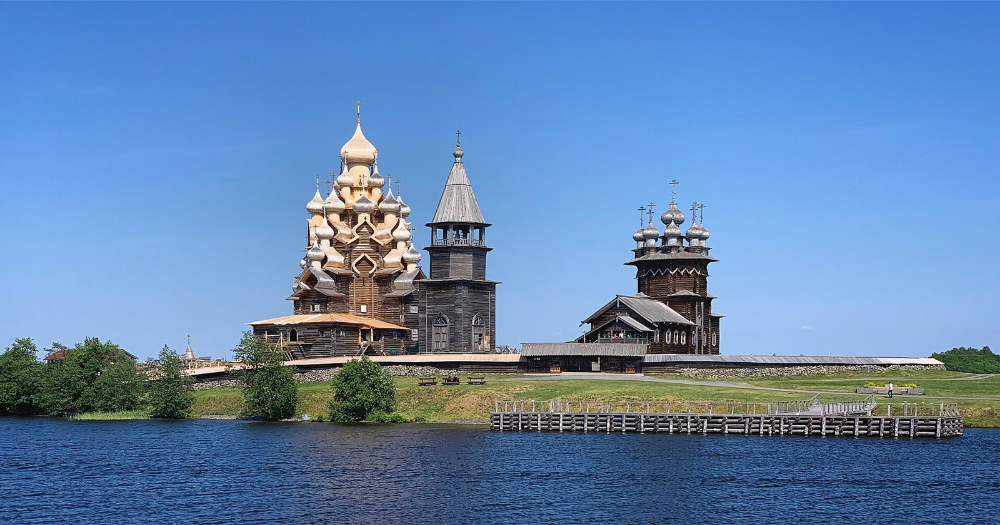
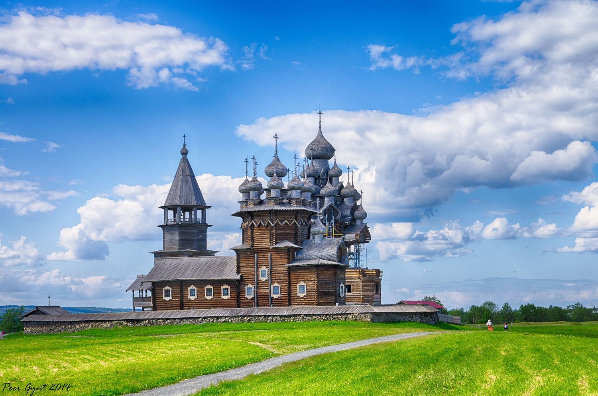
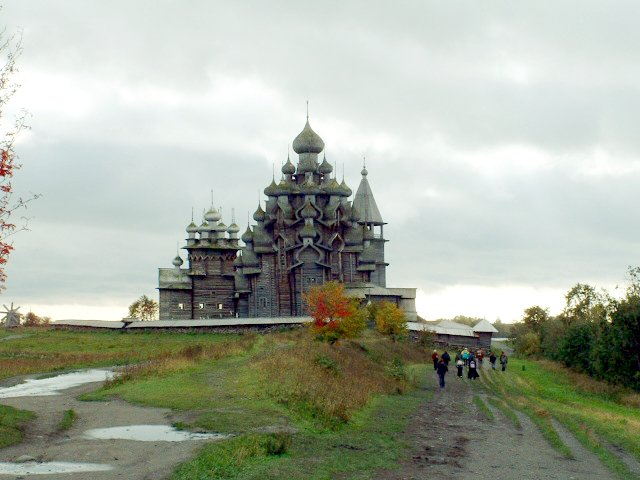
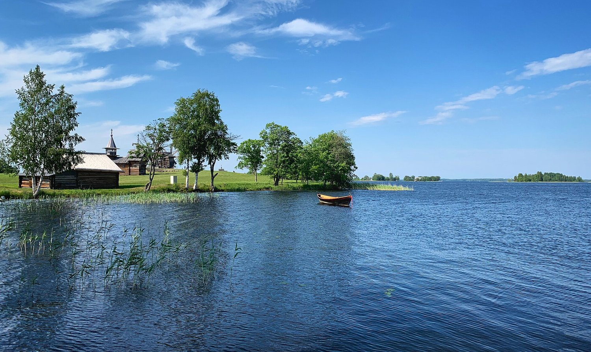
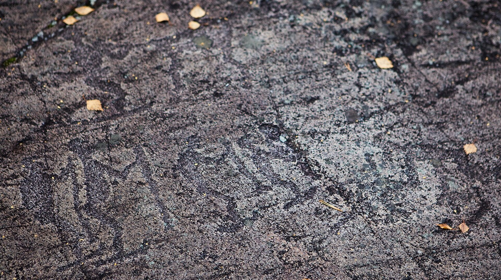
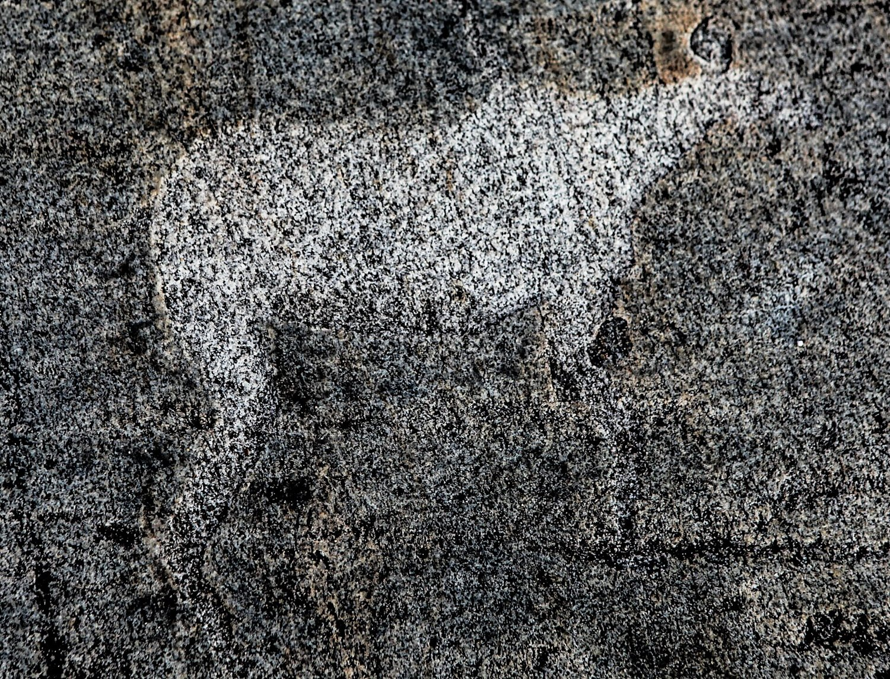
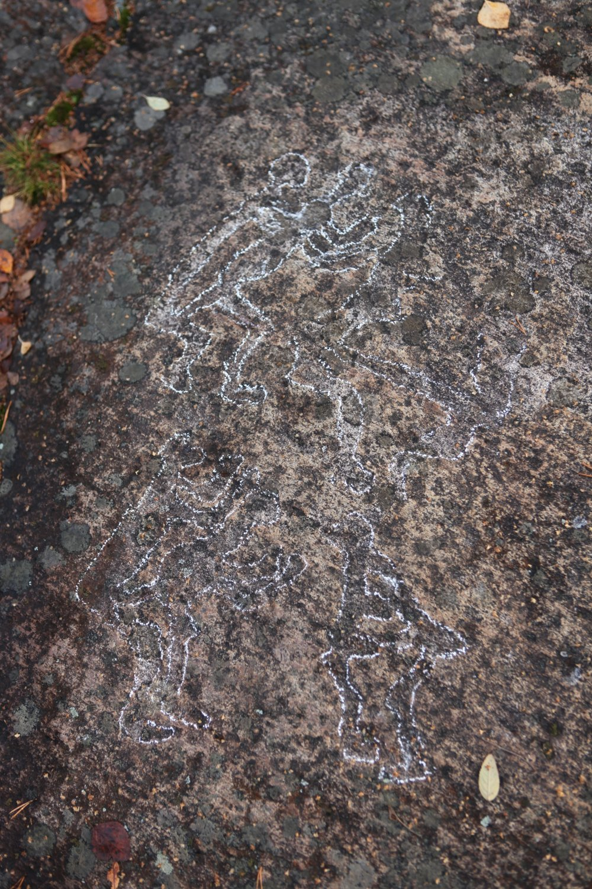
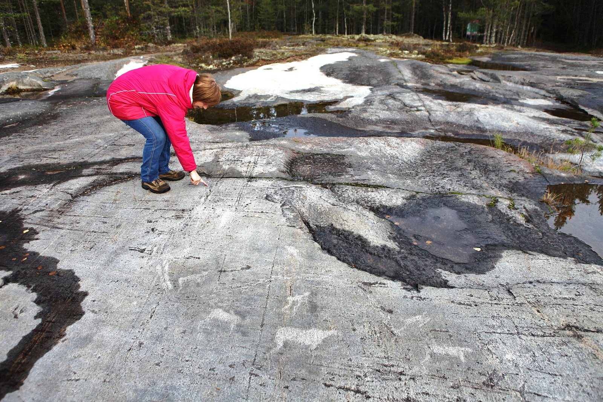

← Вернуться к путеводителюАвторы и лицензии
40 локальных фотографий с Wikimedia Commons. Лицензия каждого снимка сохраняется. Изменения: уменьшение, перекодирование JPEG и визуальное кадрирование CSS. Зимний снимок с Кивакки показывает Пяозеро; остальные виды в галерее подписаны отдельно.
Кижи

Кижский погост с воды
Sergei Gussev · CC BY 2.0
File:View of The Church of the Transfiguration, The Church of the Intercession and Belfry of the Kizhi Pogost, Karelia, Russia, June 2019 - Flickr - sergei.gussev.jpg
Уменьшение и перекодирование JPEG; отображение с кадрированием средствами CSS.

Деревянные храмы Кижей
Andrey Korchagin from St. Petersburg, Russia · CC BY-SA 2.0
File:Kizhi Pogost. Кижский Погост (14408695455).jpg
Уменьшение и перекодирование JPEG; отображение с кадрированием средствами CSS.

Преображенская церковь
Sigmund Pettersen, Zig 21:44, 8 January 2006 (UTC) · CC BY-SA 2.5
File:Wooden Miracle Kizhi.jpg
Уменьшение и перекодирование JPEG; отображение с кадрированием средствами CSS.

Берега Кижей и Онежское озеро
Sergei Gussev · CC BY 2.0
File:Boat on the Lake Onega with the historical buildings of the open-air museum in Kizhi, Karelia, Russia, June 2019 - Flickr - sergei.gussev.jpg
Уменьшение и перекодирование JPEG; отображение с кадрированием средствами CSS.
Беломорские петроглифы

Петроглифы крупным планом
Ninaras · CC BY-SA 4.0
File:Petroglyphs in Zalavruga, Belomorsk, Karelia, Russia 02.jpg
Уменьшение и перекодирование JPEG; отображение с кадрированием средствами CSS.

Древние рисунки на скале
Ninaras · CC BY-SA 4.0
File:Petroglyphs in Zalavruga, Belomorsk, Karelia, Russia 05.jpg
Уменьшение и перекодирование JPEG; отображение с кадрированием средствами CSS.

Наскальные изображения Залавруги
Ninaras · CC BY-SA 4.0
File:Petroglyphs in Zalavruga, Belomorsk, Karelia, Russia 04.jpg
Уменьшение и перекодирование JPEG; отображение с кадрированием средствами CSS.

Залавруга: общий вид площадки
Ninaras · CC BY-SA 4.0
File:Petroglyphs in Zalavruga, Belomorsk, Karelia, Russia 03.jpg
Уменьшение и перекодирование JPEG; отображение с кадрированием средствами CSS.
Leaflet 1.9.4 — BSD-2-Clause, см. assets/vendor/LICENSE. Leaflet.markercluster 1.5.3 — MIT, см. assets/vendor/LICENSE-markercluster. Картографические данные © OpenStreetMap contributors (ODbL).